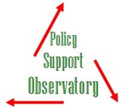
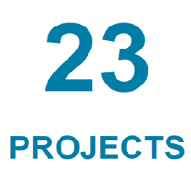

Work-Program


Each 'PSO Project' addresses a policy issue relevant to the health sector where advances can be made. PSO projects are concrete having a beggining and an end with epxected deliverables.


The Policy Support Observatory (PSO) was established in April, 2018 as a tripartite partnership between the Ministry of Health of Lebanon (MoPH), the World Health Organization (WHO) and the American University of Beirut (AUB). The PSO is based at the MoPH and seeks to provide direct analytical and informational support to health policy-making processes.
Each 'PSO Project' addresses a policy issue relevant to the health sector where advances can be made. PSO projects are concrete having a beggining and an end with epxected deliverables.